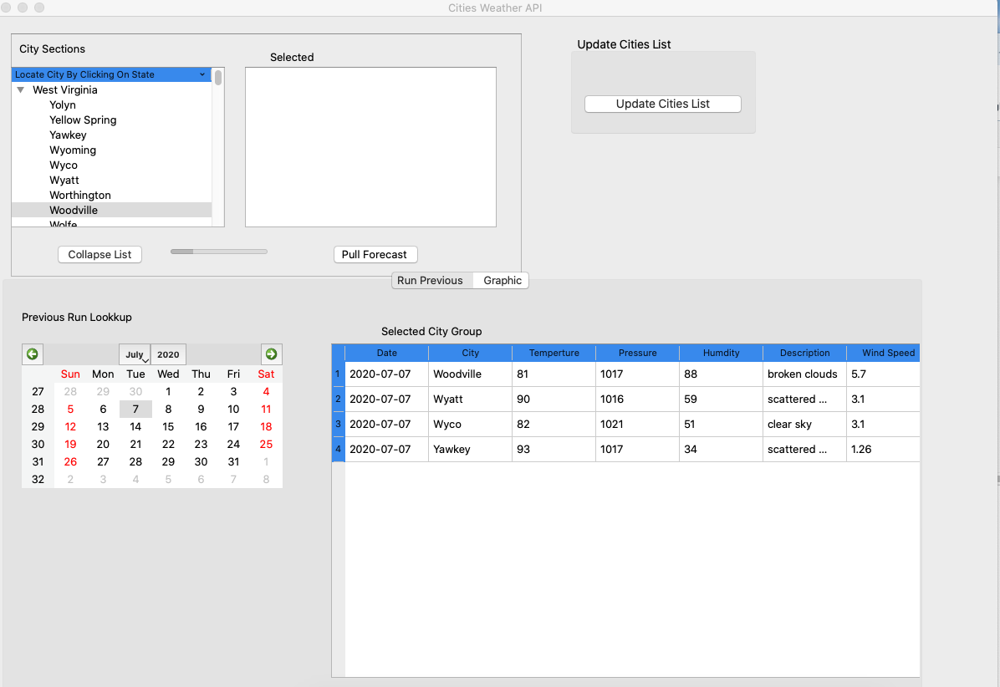

Programming Languages
Data Sources
Weather Visualization Tool

Instructions
- Select one or more cities from the tree view widget GUI.
- List view widget will populate with the selections
- Click on the "Run Forecast" button to generate a cities weather forecast.
- Below on the tab page, there is a data grid of the return data.
- Also, there is a visualization of the return data